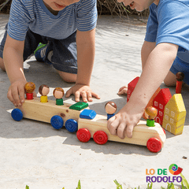
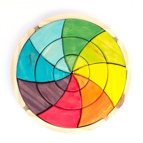
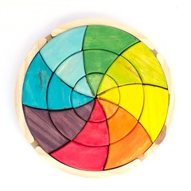

Bienvenidos
Juguetes Didácticos
 

Caracteristicas de los juguetes didacticos
Antes de adquirir juguetes para nuestros hijos, existen una serie de recomendaciones en escuelas y dependencias gubernamentales,
orientándonos sobre los criterios a considerar a la hora de comprar juguetes seguros y didácticos.
Nace entonces la pregunta: ¿cómo distinguir un juguete didáctico de uno que no lo es?
¿Qué es un juguete didáctico?
Éstos ejercitan habilidades cognitivas y psicomotrices, de acuerdo a cada edad, características y necesidades de los niños,
desarrollan su lenguaje y estimulan su creatividad, proporcionan madurez intelectual y socialización,
no son complejos, no son bélicos y no tienen personajes de moda.
¿Qué características deben tener?
- Sencillez
- Se deben manejar fácilmente
- Deben ser seguros
- adecuados para la edad y capacidad del niño
- Sus instrucciones han de ser comprensibles
- Es importante revisar etiquetas, indicaciones y materiales.
Observa que los diseñados para bebés y niños pequeños...
- Tengan un tamaño considerablemente grande ,para evitar asfixia
- Sean resistentes,fuertes y con colores llamativos
- Fáciles de limpiar
- Que no estén rotos o tengan puntas filosas
- Leer los instructivos que contienen las cajas
Compra en comercios establecidos, además de la garantía, cumplen normas de calidad y evitas posibles accidentes e intoxicaciones.
En las escuelas actualmente están fomentando el aprendizaje lúdico, utilizando juguetes educativos para estimular áreas de desarrollo como: la físico-biológica; socio-emocional, cognitivo-verbal y la dimensión académica.
Utilizan estrategias con objetivos claros y materiales que estimulan un aprendizaje profundo, agradable y cómodo
Conocé todos los productos aquí
Nuestro Facebook